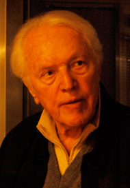

Die deutsche Version dieser Homepage finden Sie unter fhab.de Die deutsche Version dieser Homepage finden Sie unter fhab.de |
| |
|
A letter concerning the question of the School of Spiritual Science
Regarding the problem of the Free High School of Spiritual Science at the Goetheanum

Addressed to an interested readership
There can be no doubt that a society like the Anthroposophical Society must present itself to the public with a proper and regulated legal structure. To this effect a considerable number of examinations and suggestions have been made by members of the Society in order to assist the present Executive Council (“Vorstand”) of the Anthroposophical Society in the forming of judgments and decisions to aid it in its actions.
It is a different matter as regards the School of Spiritual Science. This school was called into existence through the spiritual investigations and further revelations given by Rudolf Steiner. Such revelations as well as the precise relationship to the individuality of Rudolf Steiner seem – with very few exceptions – to have run dry since his departure from the earthly plane. They appeared again few years before the turn of the 20th century. However, in what form and to which depth – even as a systematic work - the revelations from Rudolf Steiner in spiritual form or as inspirations could be given, was dependant on the degree of consciousness and the capacities that had been developed through schooling by the recipient.
As writer of these lines I point to the fact that it is not Anthroposophy itself that needs a renewal, but rather the members of the Anthroposophical Society who are called upon to take up the fundamental contributions by Rudolf Steiner in regard to self-knowledge and in regard to the realization of what is needed for the purification of the human soul faculties, in order on this firm basis to shape for themselves the supersensible organization of the human being that Rudolf Steiner time and again pointed to.
What in this way has been spiritually imparted, mainly by Rudolf Steiner, to the writer of this letter in full consciousness, and what has been given partly in comprehensive and deepened contributions regarding the development of the human soul faculties to me, has been available for years in German in my Chakra-Work (Chakra-Werk) which is not concluded. The entire composition of the work as loose-leaf collection is based on a suggestion or rather advice from Rudolf Steiner aimed at a continuation and deepening of the esoteric schooling commenced by him to the degree that one has developed ones organs for spiritual hearing and intuitive contact with the beings of the spiritual world. In this Chakra-Work it is not solely Rudolf Steiner who has provided the contents of the work. Other individualities, not yet to be named, from the supersensible realm mentioned in “How is knowledge of the higher worlds attained?” work in cooperation with Rudolf Steiner to this end.
The Free High School at the Lake of Constance (FHaB: Freie Hochschule am Bodensee) is an initiative that springs from a spiritual request from Rudolf Steiner to me. The question was posed whether I would be willing to receive communications on spiritual principles from him at regular intervals with the aim of publishing these at a certain time. It was from 1992.
In an index of themes of the Chakra-Work up to its 30th series all nomenclature derives from Rudolf Steiner who currently is addressed as Master Jesus.
DThe content of this letter of information is placed at your free disposal. It is up to your discretion whether you deem that the School of Spiritual Science in Dornach should be accountable to an administrative body, or if you are able to accept the individual path of schooling as this path was specified by Rudolf Steiner.
For the sake of completeness I ask that note be taken of the fact that also the individuality of Valentin Tomberg stood in almost constant spiritual contact with Rudolf Steiner, and that it was through Steiner that Tomberg received the task to be active within the Roman Catholic Church for certain reasons. This mission failed, however. Tombergs last work but one, the “Meditations on the Tarot”, is to be viewed as a connection between Hermeticism and Christianity. It is a hermetic, and not a catholic work, even though the contents of the book are regarded by catholic Anthroposophists and leading Roman Catholics as a means of enlivening their Church with a deepened spirituality.
It seems that the current composition of the executive board (“Vorstand”) at the Goetheanum neither is in a position to, nor is prepared to see, estimate or accept spiritual realities, but nevertheless lay claim to act in a regulatory manner in this domain. From the viewpoint of the realities of life and of spiritual schooling all essentials are sadly lacking there. It would be desirable if possibilities could be created for further independent Free Schools of Spiritual Science to be founded, free from the intentions of the Executive at the Goetheanum. A free cooperation could indeed be striven for within such a framework*.
Free High School at the Lake of Constance (Freie Hochschule am Bodensee: FHaB)
* In connection with this problem please refer also to the publication by the writer of this letter: „Okkulte Erkenntnisse über die Anthroposophische ‚Bewegung',, (Occult knowledge regarding the anthroposophical ´Movement`), Achamoth Verlag, Bodensee 2004
Willi Seiß

» Details
» zum Verlag
Hermetismus
Jeder kennt die zentrale Wahrheit des Hermetismus:
„Was oben ist, ist wie unten, und was unten ist, ist wie oben“.
(aus der „Tabula Smaragdina“)
Was ist aber die charakteristische Eigenart des Hermetismus?
von Dr. phil. Sebastian Niklaus
New Release

» Details
» zum Verlag